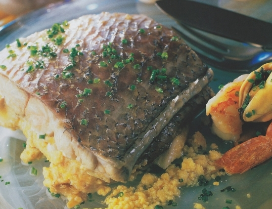

Las mejores recetas de pescados y mariscos
Te proponemos recetas con todo el sabor del mar.
Una selección de preparaciones que tienen el pescado y el marisco como principales ingredientes y que se sirven de todas las costas y cocinas del mundo.
Corvina Rellena
Hay muchas maneras de comer pescado, pero esta Corvina Rellena no tiene comparación.
Ingredientes:
- 1 corvina de 2 kg. aproximadamente
- 4 dientes ajo picados
- 1 pimiento rojo picado
- 1 cebolla picada
- 2 tomates en cubos
- 2 zanahorias previamente blanqueadas
- 3 papas cortadas a la española
- 1 huevo
- 200 ml. de aceite de girasol
- 2 dientes ajo picados
- Sal, pimienta y oliva
- 2 cebollas moradas en gajos
- 1 limón en rodajas/1 en gajos
- C/n perejil picado
- Ají molido
- Orégano
Pasos:
- Cortar todos los vegetales, unir los 4 dientes de ajo con oliva. Realizarle unos tajos superficiales a la corvina.
- Llevar la corvina bien limpia y sin escamas a una placa para horno previamente aceitada.
- Rellenar con todos los ingredientes, el aceite de ajo y abundante perejil picado. Terminar espolvoreando con un poco de los vegetales por sobre su superficie.
- Colocar una rodajas de limón, a los gajos exprimirlos y agregar la zanahoria previamente blanqueada con un toque mas de oliva.
- Llevar al horno por unos 40m.
- A las papas lavarlas bien y cortarlas en española.
- Llevar a una placa para horno con unos gajos de cebolla morada y condimentar con aji molido, orégano, sal, oliva y pimienta. Cocinar hasta que doren.
- Para el alioli llevar a un bowl el aceite, el huevo, jugo de 1/2 limón y mixear por 1m hasta que se forme la mayonesa.
Merluza a la Sorrentina con Tomate y Aceitunas
Esta receta es muy sencilla y saludable, lleva muy pocos ingredientes: merluza, tomate, aceitunas y mi hierba aromática favorita el albahaca («Basilico» en italiano). Esta sencilla mezcla de ingredientes, proporcionará a nuestro paladar un sabor fresco y único.

Ingredientes:
- 4 Filetes de Merluza fresca
- 500 gr de Tomates Rama Pera cortados en cuatro partes
- 60 gr de Aceitunas Negras con Hueso
- Albahaca fresca al gusto
- Un diente de Ajo
- 25 gr de Aceite de Oliva
- Pimienta y Sal al gusto
- 1/2 vaso de Vino Blanco
Pasos:
- Pelar y picar el diente de ajo. A continuación tomaremos una sartén y calentaremos el aceite de oliva virgen extra a fuego muy lento y rehogaremos el diente de ajo sin dejar que agarre color..
- Cortaremos los tomates en 4 partes y los echaremos a la sartén. Salpimentaremos a nuestro gusto, añadiremos las aceitunas negras y por último las hojas de albahaca picada.
- Dejaremos que la mezcla de ingredientes se cueza a fuego medio durante 10 minutos, hasta que el tomate pierda el agua y se reduzca un poco.
- Una vez transcurrido el tiempo, el tomate se habrá convertido en una salsa espesa con trozos sólidos. El siguiente paso será coger una fuente de cristal para horno y poner nuestra salsa a la Sorrentina.
- A continuación añadiremos a la salsa los filetes de merluza fresca. Salpimentaremos de nuevo y pondremos un chorrito de aceite de oliva virgen extra al gusto con algunas hojas de «basilico fresco» (albahaca).
- Por último añadiremos el medio vasito de vino blanco sobre el pescado para que coja más sabor durante la cocción.
- Precalentaremos el horno a 220/250 ºC y dejaremos que el “Merluzzo alla Sorrentina” se hornee durante 15/20 minutos.
- Después de sacar nuestro “Merluzzo alla Sorrentina” del horno, notaremos que el pescado ha soltado un poco de jugo. Esto se deberá a que la cocción en el horno es algo diferente a la de la sartén, donde el caldo se habría secado del todo.
- Serviremos colocando la salsa de tomate y aceitunas negras en la base del plato y el filete encima junto con unas hojas de albahaca fresca
”Buon Appetito“!.